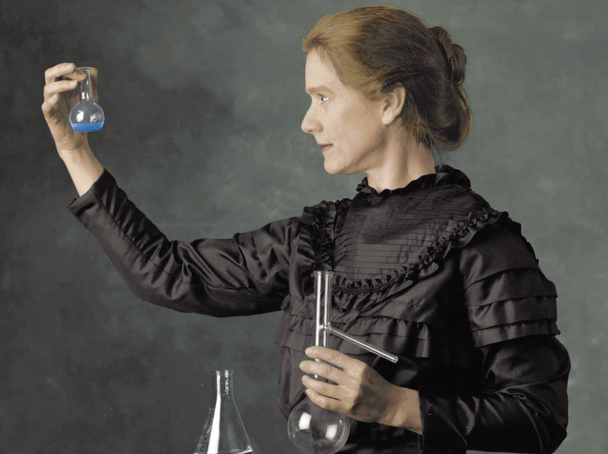
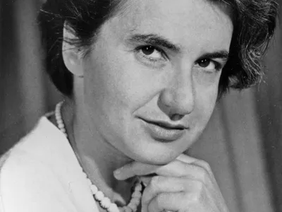
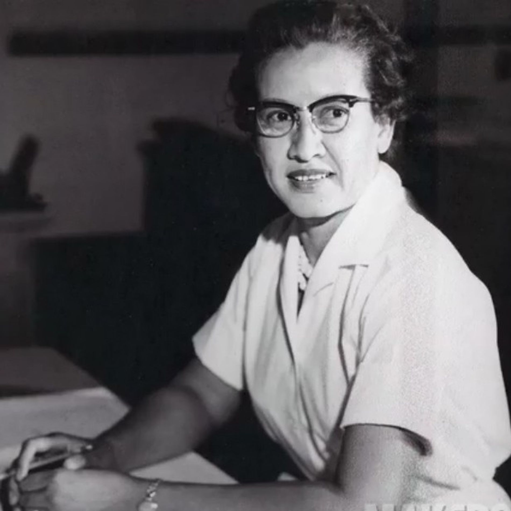
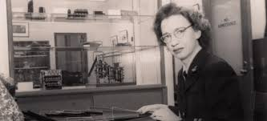

Ao longo da história da ciência, inúmeras contribuições fundamentais foram realizadas por mulheres cuja atuação, por muito tempo, permaneceu invisibilizada. Em diferentes contextos sociais e políticos, elas enfrentaram barreiras institucionais, preconceitos de gênero e a exclusão sistemática dos espaços de saber. Ainda assim, produziram conhecimento, formularam teorias, conduziram experimentos e transformaram áreas inteiras do pensamento científico.

Marie Curie
Marie Curie
Marie Curie (1867-1937) foi uma cientista polonesa naturalizada francesa, pioneira nas pesquisas sobre radioatividade. Foi a primeira mulher a ganhar um Prêmio Nobel e a única pessoa a receber o Nobel em duas áreas científicas diferentes: Física (1903) e Química (1911). Nascida em Varsóvia, na Polônia, Marie enfrentou dificuldades para estudar devido à repressão russa contra a educação feminina. Mudou-se para Paris, onde estudou na Sorbonne e conheceu seu marido, Pierre Curie, com quem realizou diversas pesquisas. Ela descobriu dois elementos químicos: polônio (nome em homenagem à Polônia) e rádio. Seu trabalho foi fundamental para o desenvolvimento da física nuclear e para aplicações médicas da radioterapia. Marie Curie morreu em 1934, vítima de uma anemia causada pela exposição prolongada à radiação, quando ainda não se conheciam os perigos dessa exposição. Seu legado científico e sua contribuição para a ciência e para as mulheres são reconhecidos até hoje.
Ada Lovelace
Ada Lovelace
Ada Lovelace (1815-1852) foi uma matemática e escritora inglesa, considerada a primeira programadora da história da computação. Filha do poeta Lord Byron, Ada teve uma educação focada em matemática e ciências, algo incomum para mulheres da época. Trabalhou com Charles Babbage, inventor da máquina analítica, um modelo inicial de computador. Ao traduzir um artigo sobre a máquina, Ada adicionou notas próprias — que incluíam um algoritmo para que a máquina calculasse uma sequência de números. Por isso, ela é reconhecida como a primeira pessoa a criar um programa de computador, muito antes dos computadores existirem de fato. Ada faleceu jovem, aos 36 anos, mas sua visão sobre o potencial dos computadores ultrapassou o seu tempo, influenciando o desenvolvimento da computação moderna.

Rosalind Franklin
Rosalind Franklin
Rosalind Franklin (1920–1958) foi uma química e cristalógrafa britânica que teve um papel essencial na descoberta da estrutura do DNA. Especialista em difração de raios X, Franklin obteve, em 1952, a famosa Fotografia 51, que revelava o formato helicoidal do DNA. Seu trabalho foi crucial para que James Watson e Francis Crick propusessem o modelo da dupla hélice em 1953. Apesar de sua grande contribuição, ela não recebeu o devido reconhecimento em vida, já que Watson e Crick publicaram a descoberta sem dar o crédito completo a ela. Rosalind morreu aos 37 anos, de câncer no ovário, provavelmente causado pela exposição à radiação durante suas pesquisas. Hoje, Franklin é amplamente reconhecida como uma figura fundamental na ciência, especialmente na biologia molecular, e um símbolo da luta das mulheres por reconhecimento na ciência.

Katherine Johnson
Katherine Johnson
Katherine Johnson (1918–2020) foi uma matemática e física norte-americana que trabalhou na NASA e teve um papel crucial nos primeiros voos espaciais dos Estados Unidos. Desde jovem, mostrou grande talento para os números. Na década de 1950, entrou para a NACA (que depois virou NASA), onde fez cálculos complexos de trajetórias, órbitas e reentradas de naves espaciais. Ela foi essencial para o sucesso da missão Apollo 11, que levou a humanidade à Lua em 1969. Naquela época, Katherine era uma mulher negra em um ambiente dominado por homens brancos, enfrentando racismo e sexismo com inteligência e determinação. Sua história ficou mundialmente conhecida através do filme "Estrelas Além do Tempo" (Hidden Figures), lançado em 2016. Katherine Johnson viveu até os 101 anos e é hoje lembrada como um símbolo de superação, ciência e igualdade racial.

Grace Hopper
Grace Hopper
Grace Hopper (1906–1992) foi uma cientista da computação e contra-almirante da Marinha dos Estados Unidos, pioneira no desenvolvimento da programação de computadores. Ela foi uma das primeiras programadoras do Mark I, um dos primeiros computadores eletromecânicos. Grace também criou a primeira linguagem de programação de alto nível que se parecia com o inglês, chamada COBOL, que revolucionou o uso dos computadores no mundo dos negócios. Grace ficou conhecida por popularizar o termo "bug" (erro em programação), após encontrar uma mariposa presa dentro de um computador, causando falha no sistema. Ela foi uma defensora da ideia de que os computadores deveriam ser acessíveis a todos, não apenas aos cientistas. Por isso, é considerada uma figura chave na democratização da computação. Grace Hopper recebeu diversas homenagens em vida e, após sua morte, se tornou uma lenda da computação, lembrada por sua genialidade, visão e coragem.
Marie Tharp
Marie Tharp
Marie Tharp (1920–2006) foi uma geóloga e cartógrafa americana, pioneira na criação dos primeiros mapas detalhados do fundo do oceano Atlântico. Trabalhando com dados de sonar, Marie ajudou a revelar a existência de uma enorme cadeia de montanhas submarinas e uma fenda no meio do oceano — a Dorsal Mesoatlântica — que foi uma das maiores provas da teoria da deriva continental e da tectônica de placas. Na época, seu trabalho foi inicialmente desacreditado por ser mulher, mas ela insistiu, e suas descobertas acabaram revolucionando a geologia. Com seus mapas, Marie mostrou que o fundo do oceano era tão complexo quanto a superfície da Terra. Hoje, ela é reconhecida como uma figura essencial na história das ciências da Terra, mesmo tendo trabalhado boa parte da carreira sem o devido reconhecimento.
Hedy Lamarr
Hedy Lamarr
Hedy Lamarr (1914–2000) foi uma atriz austríaca e inventora que fez história tanto no cinema quanto na ciência. Famosa em Hollywood nas décadas de 1930 e 1940, Hedy era conhecida por sua beleza, mas também era uma inventora autodidata. Durante a Segunda Guerra Mundial, ela co-criou, junto com o compositor George Antheil, uma tecnologia de comunicação por salto de frequência, pensada para controlar torpedos remotamente sem serem interceptados. Essa invenção não foi usada na época, mas décadas depois se tornou base para tecnologias como o Wi-Fi, GPS e Bluetooth. Hedy Lamarr só foi reconhecida como cientista muitos anos após sua morte, e hoje é celebrada como uma pioneira da tecnologia e um símbolo da união entre criatividade e inteligência.
Valentina Tereshkova
Valentina Tereshkova
Valentina Tereshkova (1937-) é uma cosmonauta, engenheira e política russa, conhecida por ser a primeira mulher a viajar para o espaço. Antes de se tornar cosmonauta, Valentina trabalhava em uma fábrica têxtil e praticava paraquedismo como hobby. Em 1963, foi escolhida entre mais de 400 candidatas para participar da missão Vostok 6, tornando-se, aos 26 anos, a primeira mulher a realizar um voo espacial solo. Durante a missão, passou quase 3 dias em órbita, deu 48 voltas ao redor da Terra e provou que mulheres também podiam suportar as condições do espaço. Após o voo, ela se tornou uma heroína na União Soviética e uma figura importante na política e na defesa dos direitos das mulheres. Valentina continua viva e é lembrada como um ícone da exploração espacial e da igualdade de gênero.
Jaqueline Goes de Jesus
Jaqueline Goes de Jesus
Jaqueline Goes de Jesus (1989-) é uma cientista biomédica brasileira, reconhecida por sua atuação no sequenciamento genético do coronavírus (SARS-CoV-2) no Brasil. Natural de Salvador, Jaqueline é formada em Biomedicina, com mestrado e doutorado na área de doenças infecciosas. Ganhou destaque internacional em 2020, ao liderar a equipe que sequenciou, em apenas 48 horas, o genoma do novo coronavírus a partir do primeiro caso confirmado no Brasil — um feito de grande importância para o controle da pandemia. Além de seu trabalho científico, Jaqueline é um símbolo de representatividade para mulheres negras na ciência brasileira, mostrando a importância da diversidade na pesquisa e na saúde pública. Ela tem se dedicado também à divulgação científica, inspirando jovens a seguirem carreira científica e lutando contra as desigualdades no acesso à educação e à ciência.
Nina da Hora
Nina da Hora
Nina da Hora (1995-) é uma cientista da computação, pesquisadora e ativista brasileira, conhecida por seu trabalho em tecnologia com foco em justiça social e combate ao racismo algorítmico. Natural de Duque de Caxias (RJ), ela se formou em Ciência da Computação e atua em pesquisas sobre inteligência artificial ética, inclusão digital e segurança cibernética. É fundadora do Instituto da Hora, que promove educação tecnológica acessível e decolonial. Nina também se destaca na divulgação científica com projetos como o canal "Computação sem Caô" e o podcast "Ogunhê", que valoriza cientistas negros. Ela é reconhecida como uma das principais vozes da tecnologia antirracista no Brasil, defendendo uma ciência mais inclusiva, acessível e representativa.